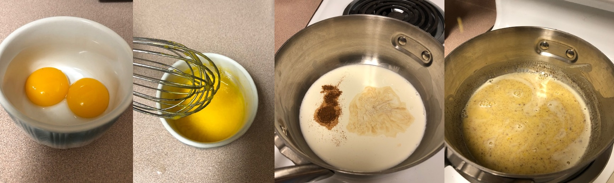
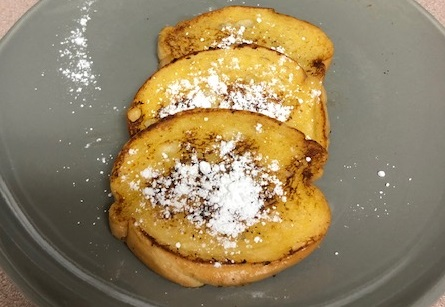

Recipe | Custard French Toast
French toast is known by many names, and it's been around for well over a millennia. It's an ingenious way to utilize stale bread. In the modern day with such excess of food and preservatives, finding a use for stale bread usually isn't necessary, but French toast is good enough to make on demand with fresh ingredients. This recipe involves dipping bread in a crème anglaise, so perhaps it ought to be called English toast. Food for thought.
Ingredients
- 1/4 cup milk
- 1/4 cup heavy cream
- 1/4 cup sugar
- 1/4 tsp vanilla extract
- 1/4 tsp ground cinnamon
- 2 egg yolks
- Sliced bread of choice
- Butter to coat pan
Conveniently, all of the ingredients for the custard are in amounts of 1/4, even the egg yolks, which you can think of as 1/4 of an octet of eggs (haha).
Custard
This custard is a crème anglaise with a high egg ratio to make for a protein-rich French toast. You can realistically use the whole egg, but I called for only the yolks to create a more standard custard.
- Put milk, cream, vanilla, and cinnamon pot on medium heat
- Crack eggs and put yolks into a dish (use egg whites for another recipe)
- Add sugar to egg yolks, and whisk together
- Once cream mixture is hot, slowly pour some of the cream into the egg yolks while stirring
- Now that egg yolks have been delicately tempered (and not curdled), incorporate yolks into pot with cream
- Continuously stir custard mix on medium heat, avoiding boiling and curdling eggs, until slightly thickened
Frying Bread
When you're ready to dip the bread into the custard, stir the custard to reincorporate the cinnamon since it settles at the bottom.
- Melt some butter in pan on low-medium heat, and watch to avoid burning
- Pour custard into bowl
- Briefly soak both sides of bread slice in custard
- Place coated bread into pan, flipping periodically until both sides golden
Garnishing
Once your French toast has been sufficiently fried, top it with confectioner's sugar. If your custard turned out well enough, you use it as a sauce. Alternatively you can top your toast with maple syrup. Make sure you use real maple syrup; fake maple syrup is quite disgusting and should be avoided at all costs.
